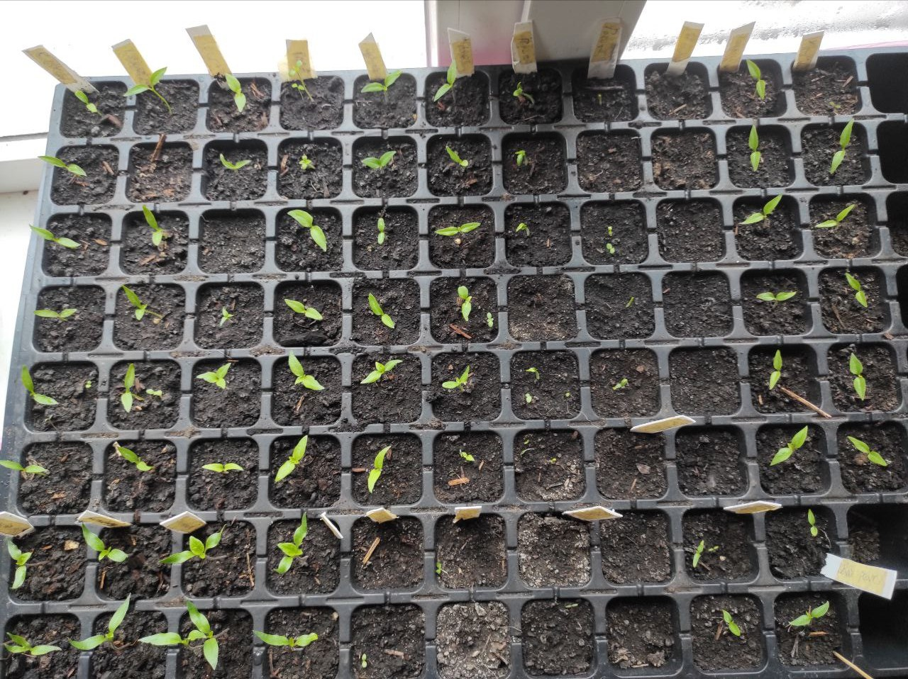

Чому я називаю їх "Партизанами"?

Ситуація така: ти садиш насіння найгострішого перцю у світі, чекаєш тиждень, два... і нічого. Порожнеча. Ти вже думаєш, що вони загинули, але ні — вони просто "пішли в підпілля".Саме тому мої Кароліни — це справжні партизани. Вони вичікують момент, коли ти втратиш пильність, щоб раптово вистрілити зеленим паростком. Це вимагає терпіння. Якщо ви не готові чекати місяць на першу "петельку", то superhot перці — це не для вас. Але той, хто дочекається, отримає справжній вогонь.